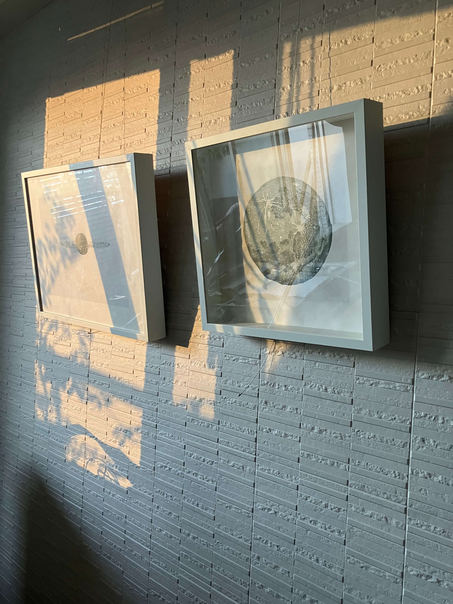

I try to bring a piece of found nature into a space


introduction text

Listen to the sound from far away, YEBISU Garden Place, Tokyo, 2024

Sundial, Jinny Street Gallery, Jingumae, Tokyo, 2023
Public Collection
- 東京藝術大学
- 台東区 パブリックコレクション
- みなかみ町 パブリックコレクション
- イスタンブール グラフィックアート美術館
- Tokyo University of the Arts, Tokyo, , Japan
- Taito-ku public collection, Tokyo, Japan
- Minakami city public collection, Gunma, Japan
- IMOGA İstanbul Museum of Graphic Arts, İstanbul, Turkey
Academic history
- 2005東京藝術大学美術学部絵画科油画専攻 卒業
- 2007東京藝術大学大学院美術研究科絵画専攻版画 修了
- 2007-9東京藝術大学大学院美術研究科博士後期課程 在籍
- 2010Goldsmiths MFA 修了
- 2005BA in Oil Painting, Tokyo University of the Arts
- 2007MFA in Print, Tokyo University of the Arts
- 2007-9PhD candidate, Tokyo University of the Arts
- 2010MFA in Design, Goldsmiths